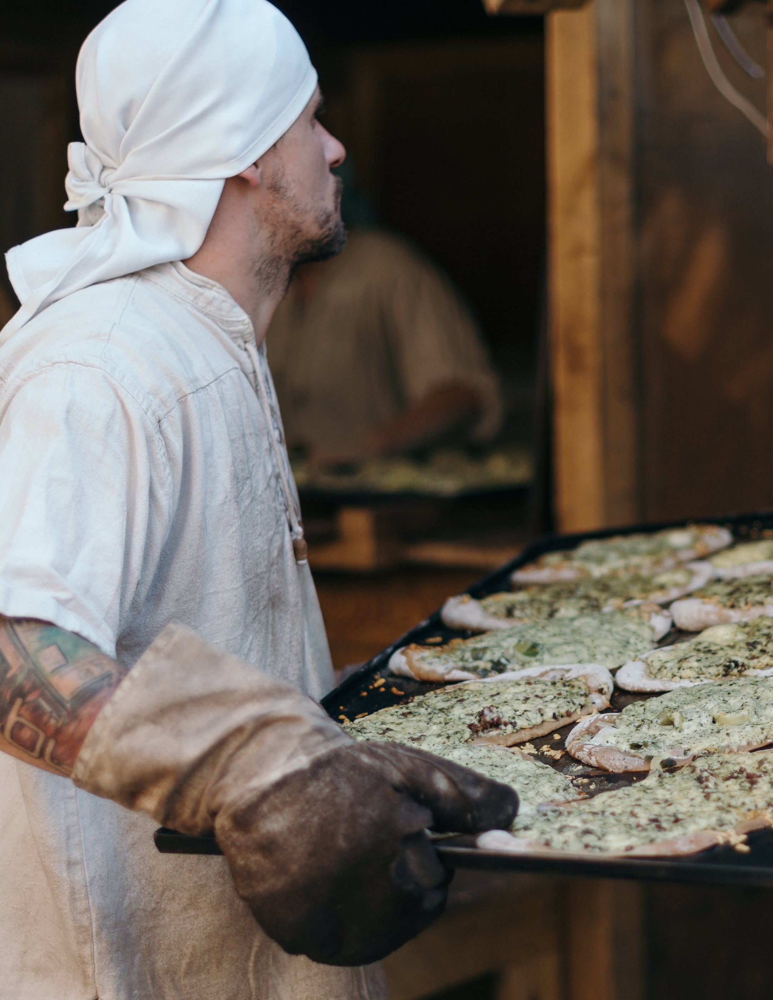
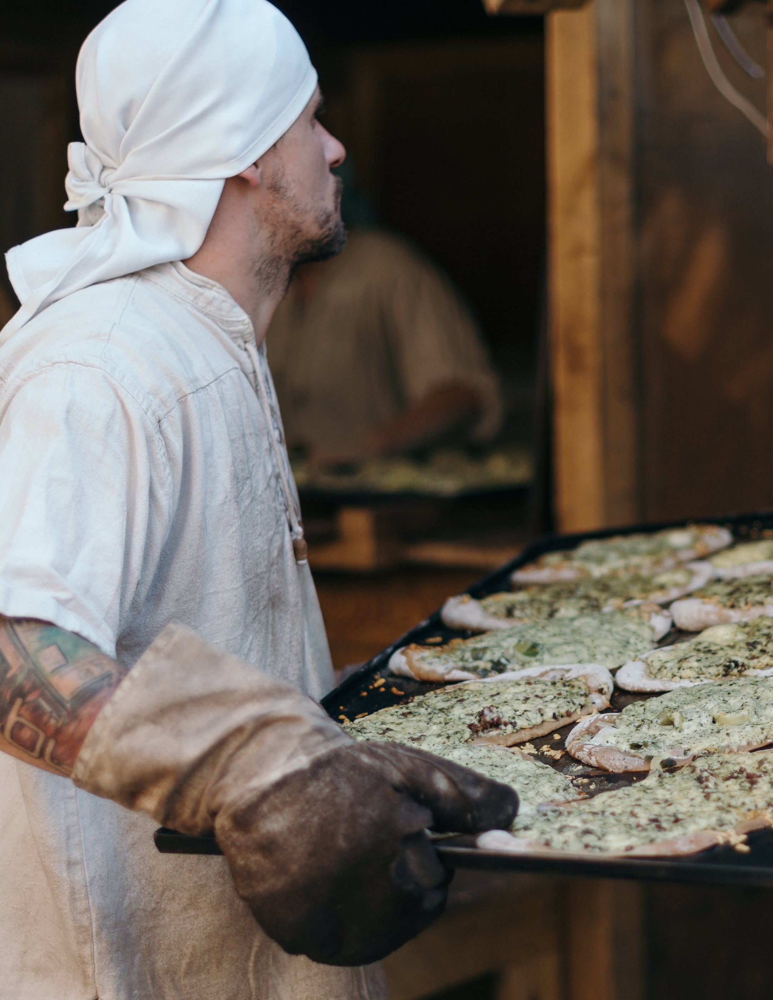

Mario’s Pizza’s
Mario’s pizza’s heeft de klassieke pizza’s uit heel Italië in huis en bestaat al 20 jaar onder leiding van Mario Bressanone. Mario en zijn enthousiast team maken niet alleen pizza’s maar ook alle pasta’s. Guanlucca is de trots van het bedrijf. Guanlucca en Carlos zijn de vaste pizzabakkers van Mario. Carlos is onze alleskunner, niet alleen de beste pizza’s, maar ook alle pasta’s maakt hij. Mario’s zoons die zijn de bezorgdienst uit. Mario doet de bediening en neemt de telefoon aan. In Mario’s Pizza bestaan circa 15 pizza’s en 4 pastagerechten op de kaart. Daarnaast is er een wisselpizza met seizoensingrediënten. Het zijn goed betaalbare producten voor iedereen.
Geschiedenis van pizza’s
Pizza begint in Italië als een normale maaltijd in populaire buurten die moeders naar hun kinderen bakken nadat ze terugkwamen van school. Daarna een van hen heeft een pizzeria opende, en van daaruit verspreidde dit voedsel zich over alle steden van Italië via restaurants die erin gespecialiseerd waren tot het bereikte de buurlanden en vervolgens de wereld.
Pizza
Traditionele pizza bestaat uit deeg ,saus, tomaten, kaas en bevat soms gehakt, maar tegenwoordig zijn er veel soorten pizza’s gemaakt, waaronder: Paper, kruiden, champignons, vis , garnalen, olijf en maïs, kip, vlees: zoals lam en rundvlees ,groenten, eieren, tijm, ananas, Basilicum en Saus.
Pizza aangeraden
Mario raad jullie aan om een paar pizza’s te proberen, zoals Pepperoni, hawaii en prosciutto. Die zijn de lekkerste pizza’s uit Mario’s pizza’s gekomen.
Ik hoop dat u wel genoeg informatie gehad over pizza en Mario’s pizza’s. Ik en onze enthousiast team uitnodiging u om ons aangeraden pizza te proberen die van Guanlucca en Carlos is gemaakt.
 
